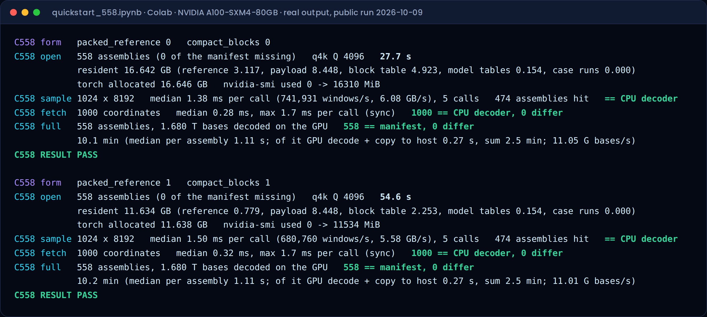

1.68 trillion bases from the Human Pangenome Reference Consortium, held in 16.6 GB of A100 memory. Ask for any window of any genome and get the exact bases back — 743,271 times a second.
What the notebook does on a single Colab A100, once the dataset parts are downloaded.
(genome, contig, start, len) → exact source bases, one synchronous call.
The Run it on Colab button above opens this notebook. Downloading the dataset from Zenodo takes most of the time; the GPU part is minutes.
Each assembly is stored as a refrel3 archive: blocks coded against a shared reference, with a table that maps any coordinate to its block. The whole cohort is loaded into GPU memory once; after that a query never touches disk.
(genome, contig, start, len)Coordinates are 0-based, end-exclusive, within one contig. The answer is the source bases with case and IUPAC codes preserved, without headers or line breaks.
Same 558 assemblies for every tool. Conditions for each number are below and in the README; raw logs and SHA-256 hashes are in the repository.
With 16 threads: AGC 97/s, refrel3 v1 1,306,848/s. In our profiling, shuffled sample order made AGC reload a metadata batch for each window; when queries are grouped by sample those reloads drop to zero. This is a workload result, not a general claim about AGC.
AGC is built for size and is smaller than v1.
Compact form (2-bit reference, two-level block table): 11.6 GB resident, 736,762 random 8 KiB windows/s.
Summary — the full table, logs and commands are in the repository README.
| Item | Conditions |
|---|---|
| GPU | NVIDIA A100-SXM4-80GB, driver 580.82.07, CUDA 13.0 |
| Random windows | 1,024 × 8 KiB per call, data already resident, median of 5 calls (1.38 ms per call); cohort open time excluded; every window compared with the CPU decoder |
| Single fetch | synchronous call, median 0.28 ms, max 1.7 ms |
| Correctness | archives: SHA-256 equal to the manifest; full decode rebuilds each FASTA (headers, line wrapping) and matches the source file's XXH3-64 — 558/558 |
| CPU vs AGC | AGC 3.2.4 (e67e3fc, -O3 -march=native), AMD EPYC 4344P, warm cache, 3 warm-ups + 9 runs, median; in-process harness, archive opened once; 4,096-base windows inside contigs; answers checked by SHA-256 |
| Data | Human Pangenome Reference Consortium, BioProject PRJNA730823 |
The public notebook runs the full 558/558 gate from the published dataset. No account or token needed.
Local install and the CPU-only quick start are in the README.
Found a mismatch or a failed run? Please open an issue with the log and your hardware details.
Please cite the Zenodo record: doi.org/10.5281/zenodo.23232317. A ready citation is in CITATION.cff.